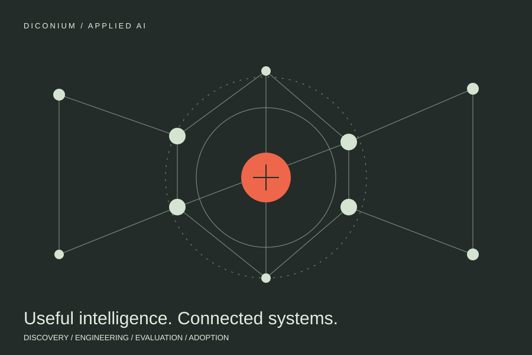

DICONIUM / APPLIED AI
From AI opportunity
to working product.
I lead a seven-person AI R&D team and build across the stack myself. My work at diconium spans product discovery, architecture, implementation, evaluation, and adoption.
- MY ROLE
- Principal Specialist AI · AI R&D lead since 2024
- PERIOD
- At diconium since 2022
- SCOPE
- 0→1 AI products · Full-stack engineering · Strategy

THE CONTEXT
The problem to work on.
Enterprise AI work rarely stops at a prototype. It has to answer a real question, connect to the right data, survive evaluation, and fit the people and processes around it. At diconium, I work across those decisions and the code needed to deliver them.
MY CONTRIBUTION
Where I took responsibility.
Lead the team and own delivery.
I created and now lead a seven-person R&D team across data science, business analysis, UX, and product strategy. I take 0→1 products from opportunity discovery and solution architecture through implementation, guardrails, production rollout, and adoption.
Build knowledge systems people can use.
Built an agentic multimodal platform that makes documents, images, and slides searchable and explainable. Deployed a RAG enterprise assistant across more than five use cases, including medical and pharmaceutical environments.
Turn data into answers and better workflows.
Built natural-language interfaces for structured data and automated content and annotation workflows. The work includes an NLP-driven SEO system and labeling pipelines.
Stay hands-on from models to interfaces.
Design and build LLM/ML pipelines, backend services, APIs, databases, frontends, and cloud deployments. Applied work includes forecasting with LSTM, Prophet, and XGBoost, employee skill mapping, and synthetic-data pipelines.
Make the strategy actionable.
Authored a Volkswagen Group AI roadmap and enterprise maturity model. Led a data-platform proof of concept tied to a €10M+ opportunity, and helped ship diconium’s first internal AI data product.
WHAT CAME OUT OF IT
From intention to evidence.
These are results from separate initiatives, as reported in my CV. The natural-language analytics work also reached 95% user satisfaction; SEO automation increased organic traffic by 45%, and annotation workflows reduced labeling time by 70% while improving consistency by 35%.
SOURCES & FURTHER READING
This brief is based on my professional record. Roles and figures are reported in my CV.